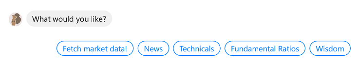

I later realised that incorporating API functionality would make it more powerful. I could perform quick checks on share prices, or pack in interactive content to function as behavioural nudges.

The chatbot functions as follows: based on the user’s inputs, DialogFlow will detect the appropriate intent. If an intent requesting for share price is detected, the backend webhook will make a POST request to the AlphaVantage API which provides financial information.
Over time, I was able to improve the backend logic to include 2 more functions: 1) a news function:

And 2) a technical indicator function, serving 3 simple indicators for my needs (MACD, RSI and stochastics).

The Investing Squirrel is integrated with Facebook for beta testers. A raw version of it is available on Telegram (but due to limited API calls and choppy dynos from free Heroku hosting, you may experience some lag). Give it a shot and have fun!